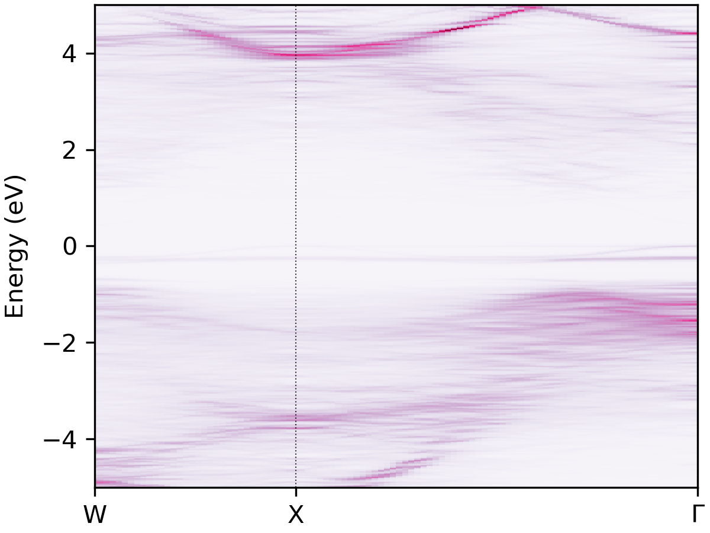
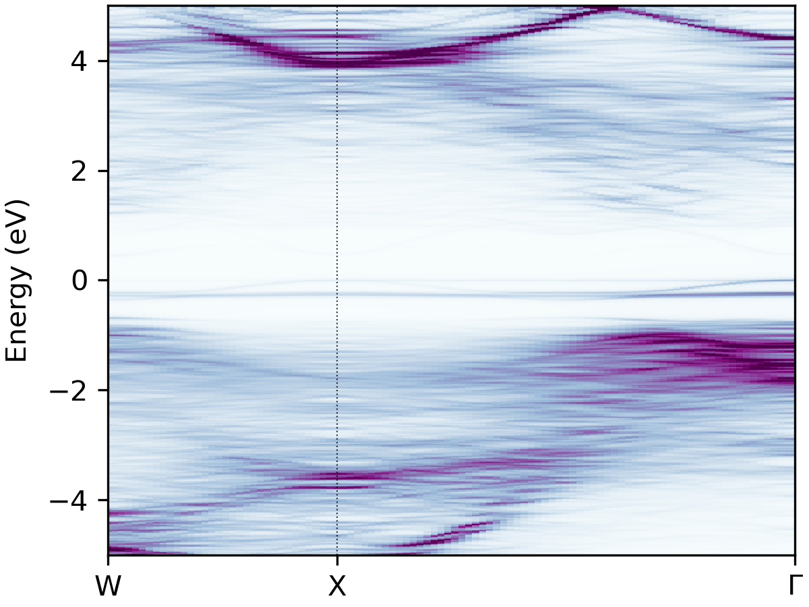
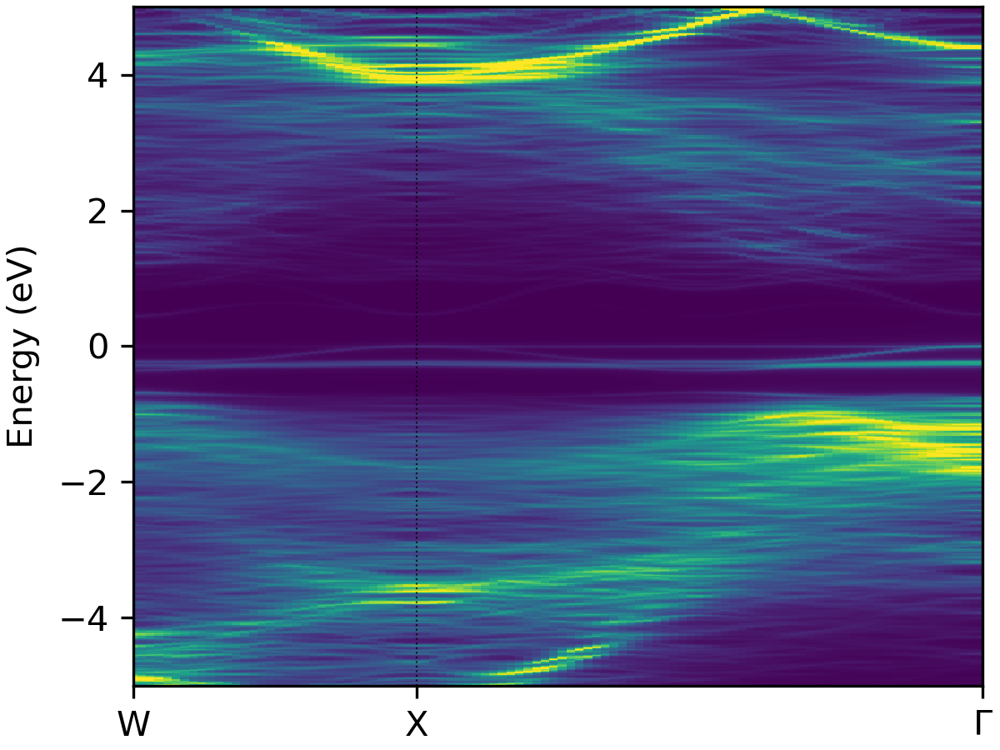
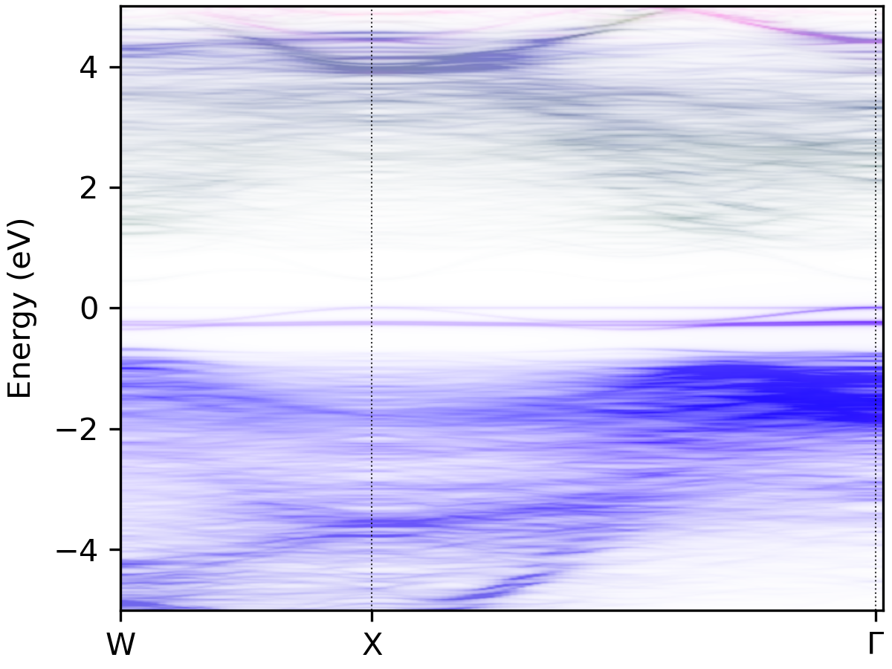
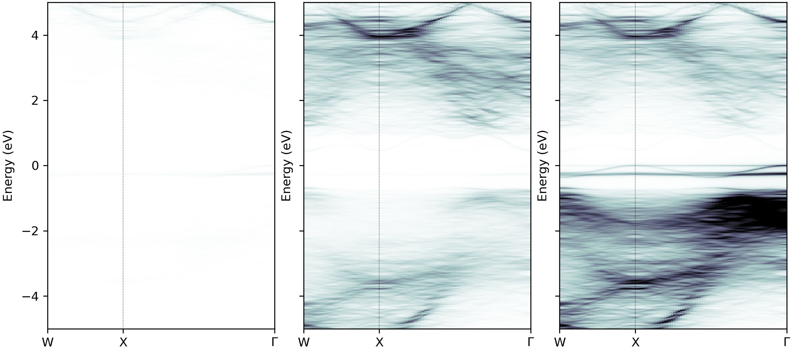
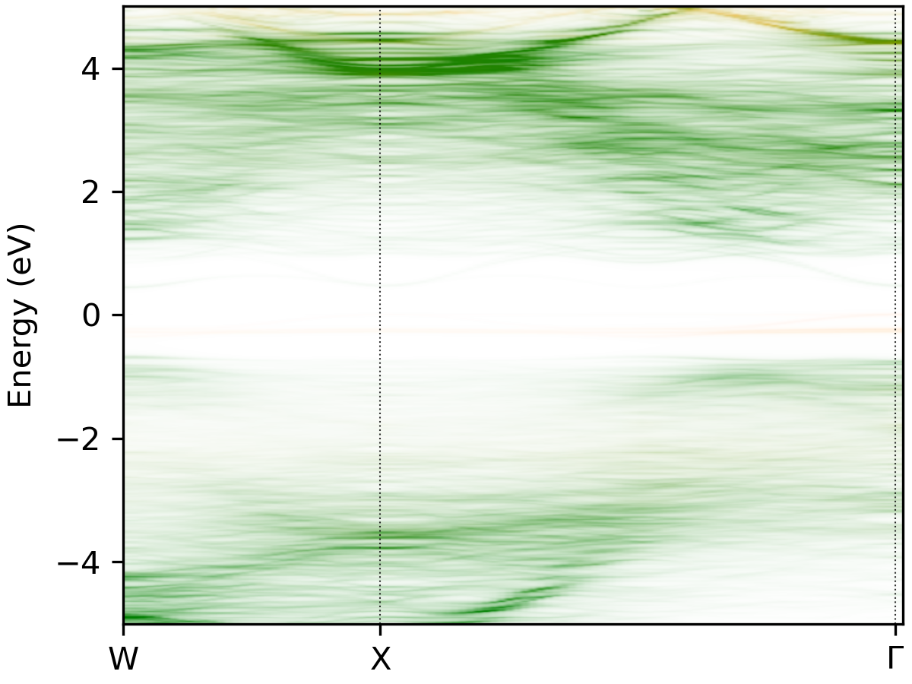

NaBiS2 SQS Projection
Unfolding the Band Structure of Cation-Disordered NaBiS2, with and without Atomic Projections
Note
Relevant files can be found in the examples/NaBiS2 folder.
Note that the PROCAR.gz file will need to be decompressed with gzip -d PROCAR.gz if reproducing these example plots with the raw data.
In this example, we unfold the bands from a 80-atom special-quasirandom (SQS) supercell of NaBiS\(_2\), where the Na and
Bi cations are quasi-randomly distributed, in order to simulate randomised cation disorder in the material.
These results were published in Y. T. Huang & S. R. Kavanagh et al.
Nature Communications 2022, and an early version of
easyunfold was used for the similar AgBiS\(_2\) in Y. Wang & S. R. Kavanagh et al.
Nature Photonics 2022, with these plots demonstrating the key
differences in electronic structure and thus photovoltaic performance between these two materials.
We have previously calculated the easyunfold.json file from the calculation using easyunfold calculate WAVECAR.
Using the default plotting options with easyunfold unfold plot, we obtain the following unfolded band structure:

This is nice, but we can make the plot a little clearer by adjusting some of the parameters like the intensity scaling
(via --vscale) and the colour map (via --cmap). Below we set --vscale 0.4 to increase the colourmap intensity,
and try BuPu, viridis and bone_r from left to right below:
easyunfold unfold plot --vscale 0.4 --cmap "BuPu"
easyunfold unfold plot --vscale 0.4 --cmap "viridis"
easyunfold unfold plot --vscale 0.4 --cmap "bone_r"
| BuPu | viridis | bone_r |
|---|---|---|
|  |  |  |
We can also plot the unfolded band structure with atomic projections, which is useful for understanding the electronic
structure of the material. In this case, we are curious as to which atoms are contributing to the band edges, and so
the atomic projections will be useful. For this, we need the PROCAR output from VASP with the atomic and orbital
projection information, and so LORBIT should be set to 11 or 12 in the INCAR for the original calculation.
When plotting the unfolded band, the plot-projections subcommand is used with the --procar <PROCAR> and
--atoms-idx <atoms-idx> options:
easyunfold unfold plot-projections --atoms-idx="1-20|21-40|41-80" --procar PROCAR --intensity=2 --combined

From this plot, we can see that Sulfur anions (in blue) dominate the valence band, while Bismuth cations (in green) dominate the conduction band, with minimal contributions from the Sodium cations as expected.
Note that the path of the PROCAR is passed along with the group of atoms.
In this example, the first 20 atoms are Na, the second 20 are Bi and the last 40 are S. Different groups are
separated by |, and - can be used to define the range.
Note that we use "1-based indexing" for the atoms here, matching the VASP format (i.e. the index of the first atom is 1,
not zero as in python).
Note
The projections are not stored in the easyunfold.json data file. So the PROCAR should be kept for replotting in the future.
While the main conclusions of S dominating the valence band and Bi dominating the conduction band are clear from the plot above, the high intensity of the S projections in the valence band makes the Bi contributions in the conduction band more faint and less apparent.
So, we can create separated plots for each atom type to make their individual contributions more clear:
easyunfold unfold plot-projections --atoms-idx="1-20|21-40|41-80" --procar PROCAR --cmap="bone_r" --vscale 0.4

An alternative option here is also to just plot only the contributions of Na and Bi cations, with no S projections:
easyunfold unfold plot-projections --atoms-idx="1-20|21-40" --procar PROCAR --intensity=2 --combined --colors="r,g"

While this plot isn't the most aesthetic, it clearly shows that Bi (green) contributes to both the conduction band and (less so) valence states, but Na (red) doesn't contribute significantly at all.